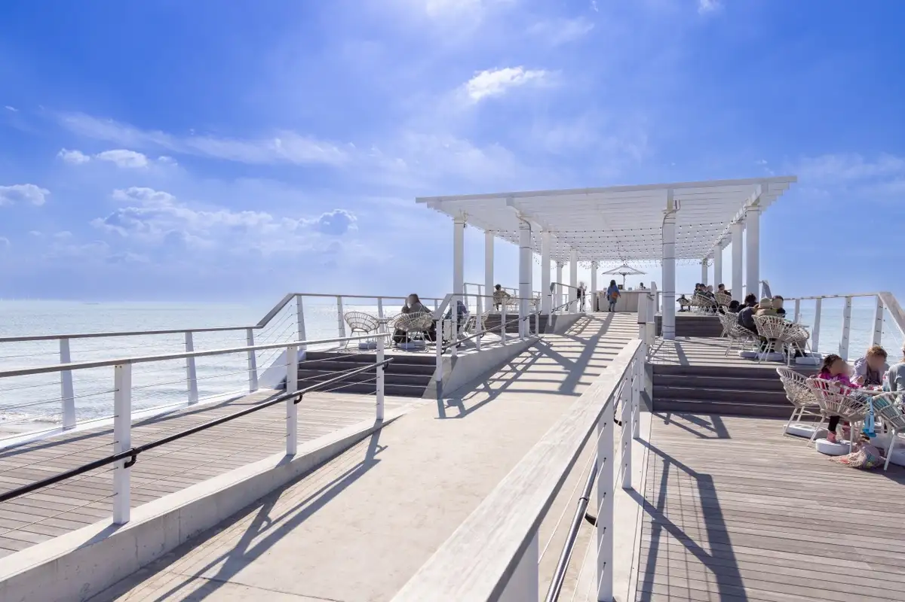
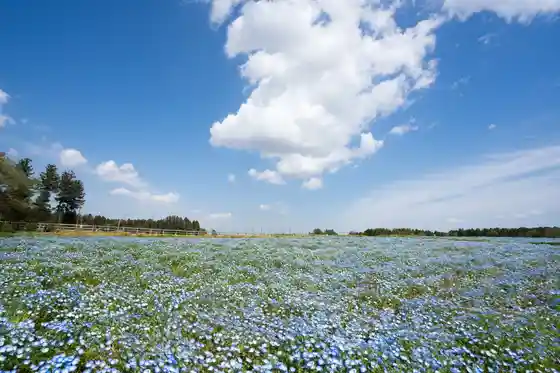
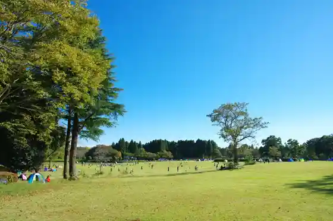
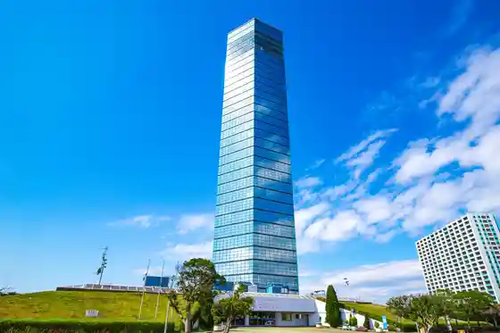

Chiba
Chiba · Chiba
Chiba
Highlighted on the Chiba map.

Sights
SUNSET BEACH PARK INAGE (Inage Seaside Park)
Tomita Satoniwa Ko Sono

Showa Forest

Chiba Science Museum
Chiba Pototawa

Chiba Dobutsu Park
BOTANICA MUSEUM
Chiba Minato Meguri (Kezuhaba)
Kisetsu no Hana (Kosumosu) / Tomita Satoniwa Ko Sono
Chiba Prefectural Makuhari Seaside Park Ken Hama Sono
Izumi Nature Park
Chiba Prefectural Chuo Museum
Chiba Park
Foresutoadobencha Chiba
Makuhari Messe
Chiba Shrine
ZOZO Marinsutajiamu
Chiba Art Museum
Chiba Miyako City Mo no Reru
Chiba Prefectural Art Museum
Tsubaki Mori Komuna
Hoki Art Museum
Aoba no Mori Park
Fukuda Denshi Ariina
Kotehashi Onsui Puru
Kyushin Tani Dembe Inage Besso
Inohana Park
Pasaru Makuhari (Nobori)
Akuarinku Chiba
Oyumi no Shiki no Michi
the RECORDS
Chiba Ritsu Kyodo Museum
Satsukiga Oka Meitengai
Pasaru Makuhari (Kudari)
Makuhari Beach Fesuta Hanabi Kansho Kuruzu / Chiba Minato
Kitatani Tsu Onsui Puru
JA Chiba Mirai Nosambutsu Chokubai Tokoro Shoika Go Chiba Mise
TIPSTAR DOME CHIBA
Kisetsu no Hana (Bara) / Chiba Miyako City Ryokka Botanical Garden
Messemoru
Chiba Wainarii
Chiba Ritsu Ka So Ri Kaizuka Museum (Chiba)
Chiba Ushi no Hiroba
Inage Memorial Museum
Kisetsu no Hana (Tsutsuji) / Showa Forest
Chiba Ken Gyoren Kaisambutsu Chokubai Tokoro (Umi Market)
Nihonshu Puremiamuraunji Ikkon Fugetsu by PERIE CHIBA
Kisetsu no Hana (Hanashobu) / Izumi Nature Park
Chiba Yukari no Ie Inage
Kisetsu no Hana (Ajisai Suiren) / Showa Forest
Chiba Ocha Ya Goten Ato
Chiba Tami Gyararii Inage
Watashi no Inaka Tani to Workshop
Chiharu Farm